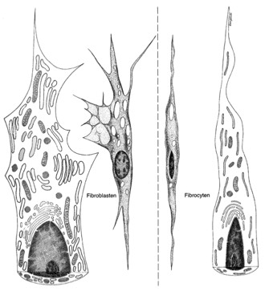
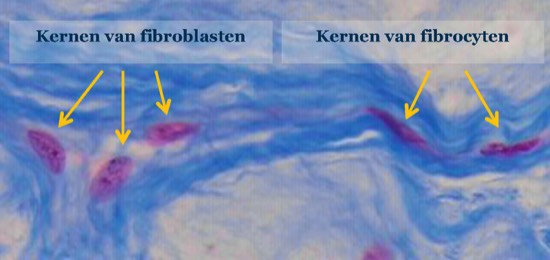

B. Welke cellen kan je herkennen in bindweefsel s.s.?
In bindweefsel s.s. maken we onderscheid tussen de vaste cellen die ter plaatse differentiëren en delen en de vrije cellen die via de bloedbaan worden aangevoerd, zich kunnen verplaatsen doorheen de mazen van het bindweefsel en zeer belangrijk zijn voor verdediging van ons lichaam.
Tot de vaste cellen behoren onder meer de fibroblasten, fibrocyten, adipocyten, mestcellen en sommige types van macrofagen. Tot de vrije cellen behoren onder meer macrofagen, plasmacellen en leukocyten (witte bloedcellen).
Cellen die de matrix vormen van bindweefsel s.s.:
a. Fibroblasten
Fibroblasten zijn de meest voorkomende bindweefselcellen. Het zijn deze cellen die actief bindweefselvezels en grondsubstantie produceren. Dit betekent dat ze alle kenmerken van eiwit-producerende en -secreterende cellen bevatten:
- een grote ovale kern met een duidelijke nucleolus en fijn verdeeld euchromatine
- een goed ontwikkeld ruw endoplasmatisch reticulum (RER) en Golgi-apparaat. Door de aanwezigheid van overvloedig RER zal het cytoplasma relatief basofiel aankleuren.
Fibroblasten zijn spoelvormige cellen met talrijke cytoplasmatische uitlopers.
b. Fibrocyten
Wanneer een fibroblast volledig ingesloten raakt door de matrix die hij zelf produceert, wordt deze een fibrocyt genoemd. Een fibrocyt bevindt zich in een ‘rustend’ stadium en heeft als voornaamste functie het in stand houden van de matrix. Fibrocyten zijn kleiner en meer afgeplat dan fibroblasten. Ze hebben geen uitlopers en een eerder langwerpige donkergekleurde kern.
In bindweefsel s.s. maken we onderscheid tussen de vaste cellen die ter plaatse differentiëren en delen en de vrije cellen die via de bloedbaan worden aangevoerd, zich kunnen verplaatsen doorheen de mazen van het bindweefsel en zeer belangrijk zijn voor verdediging van ons lichaam.
Tot de vaste cellen behoren onder meer de fibroblasten, fibrocyten, adipocyten, mestcellen en sommige types van macrofagen. Tot de vrije cellen behoren onder meer macrofagen, plasmacellen en leukocyten (witte bloedcellen).
Cellen die de matrix vormen van bindweefsel s.s.:
a. Fibroblasten
Fibroblasten zijn de meest voorkomende bindweefselcellen. Het zijn deze cellen die actief bindweefselvezels en grondsubstantie produceren. Dit betekent dat ze alle kenmerken van eiwit-producerende en -secreterende cellen bevatten:
- een grote ovale kern met een duidelijke nucleolus en fijn verdeeld euchromatine
- een goed ontwikkeld ruw endoplasmatisch reticulum (RER) en Golgi-apparaat. Door de aanwezigheid van overvloedig RER zal het cytoplasma relatief basofiel aankleuren.
Fibroblasten zijn spoelvormige cellen met talrijke cytoplasmatische uitlopers.
b. Fibrocyten
Wanneer een fibroblast volledig ingesloten raakt door de matrix die hij zelf produceert, wordt deze een fibrocyt genoemd. Een fibrocyt bevindt zich in een ‘rustend’ stadium en heeft als voornaamste functie het in stand houden van de matrix. Fibrocyten zijn kleiner en meer afgeplat dan fibroblasten. Ze hebben geen uitlopers en een eerder langwerpige donkergekleurde kern.

Vergelijkend schema van een fibroblast en een fibrocyt. Merk de ovale kern met fijn verdeeld chromatine op in de fibroblast en de langwerpige, donkere kern met meer heterochromatine in de fibrocyt.

Foto van een lichtmicroscopische coupe. Links zijn 3 kernen van fibroblasten te zien: ze zijn ovaal, eerder bleek, hebben een duidelijke nucleolus en fijn verdeeld chromatine.
Rechts zien we 2 kernen van fibrocyten, welke donker zijn en meer afgeplat.
In lichtmicroscopische preparaten is meestal enkel de kern van fibroblasten en fibrocyten zichtbaar!
Vordering zelfstudie bindweefsel s.s.: